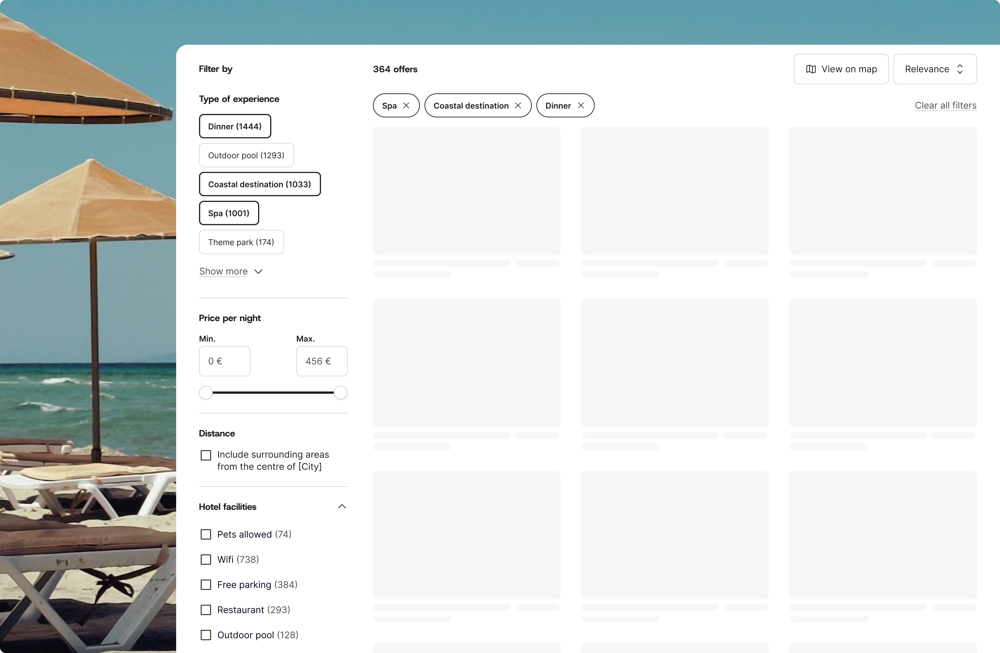
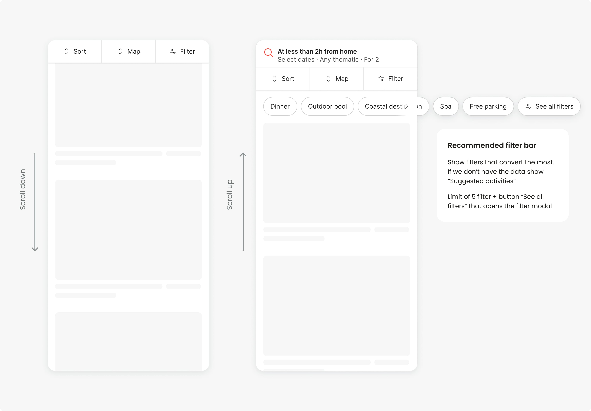
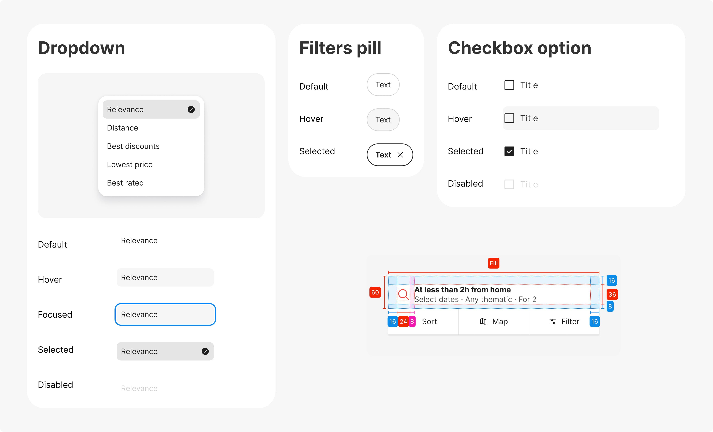

Weekendesk es una plataforma de viajes y escapadas con un catálogo amplio de alojamientos, experiencias y paquetes en distintos mercados y categorías de producto.
Como parte de un proceso más amplio de evolución del producto y del design system, participé en el rediseño del sistema de filtros de la plataforma, con el objetivo de mejorar la usabilidad, la consistencia y la escalabilidad de la experiencia de búsqueda.
El proyecto implicó una colaboración constante con los equipos de producto, tecnología y data para redefinir cómo los usuarios exploran y refinan resultados dentro de una plataforma compleja.

El reto
El sistema de filtros existente había evolucionado de forma poco estructurada con el tiempo, generando varios problemas tanto a nivel UX como técnico:
Inconsistencias entre productos y páginas, se mostraban diferentes filtros dependiendo de la página de búsqueda
Jerarquías poco claras
Filtros duplicados y con funcionalidades poco claras
En mobile, mucho espacio ocupado en pantalla
Además, la plataforma estaba pasando por una evolución visual y del design system, por lo que la nueva solución también debía alinearse con el nuevo branding y sentar bases más sólidas para futuros desarrollos.
Investigación y discovery
La primera fase del proyecto estuvo centrada en entender tanto las necesidades de usuario como las limitaciones internas de la plataforma.
Para ello:
- realicé benchmarking de plataformas de travel y ecommerce,
- analicé el comportamiento actual de los filtros y sus inconsistencias,
- trabajé junto al equipo técnico para entender limitaciones y deuda técnica,
- pregunté al equipo de data cuales eran los filtros más usados por país y plataforma, filtros que se
activan y desactivan en la misma sesión, y otros datos que podían ser relevantes,
- colaboré con producto para identificar prioridades y puntos de fricción.
- y utilicé herramientas de IA como Claude para analizar información proporcionada por el equipo de data y
sintetizar insights relevantes para el proyecto.
Además, estructuré documentación funcional y UX en Notion para facilitar la alineación entre diseño, producto y tecnología durante el proceso de definición. Este proceso permitió detectar patrones duplicados, diferencias de comportamiento entre productos y problemas de consistencia que afectaban a la experiencia global.
Enfoque de diseño y resultados
El rediseño se centró en construir un sistema de filtros más claro, consistente, escalable y alineado con la evolución del producto y del design system. En una primera iteración, el foco estuvo puesto en mejorar la experiencia mobile-first, redefiniendo los componentes según el nuevo branding y estableciendo patrones de interacción consistentes entre los distintos productos de la plataforma. Además, se trabajó en mejorar la jerarquía visual y la accesibilidad de la interfaz, crear componentes reutilizables que facilitasen el mantenimiento y la escalabilidad de futuras soluciones.
Nueva estructura mobile-first
La primera decisión fue dar más visibilidad a los filtros en mobile sin reducir el espacio disponible para los resultados. Para ello, se diseñó una barra de filtros sticky integrada en la parte superior, evitando el uso de elementos flotantes que ocuparan parte de la pantalla. Además, al hacer scroll hacia arriba, aparece la barra con los filtros de búsqueda principales.
Esta solución responde al comportamiento observado de los usuarios: los filtros de búsqueda suelen configurarse al inicio y rara vez se modifican durante la navegación. Por ello, permanecen ocultos mientras se exploran los resultados y reaparecen solo cuando pueden resultar útiles.
También se incorporaron pills con filtros recomendados y filtros seleccionados. A partir del análisis realizado junto al equipo de Data, se priorizaron los filtros con mayor uso y mejor tasa de conversión, adaptando las recomendaciones a cada país según los datos disponibles.

Unificación y rediseño de componentes
Se unificaron elementos con comportamientos similares en componentes únicos para aumentar la consistencia entre productos y se rediseñaron siguiendo las directrices del nuevo branding.

Mejorar la jerarquía visual y accesibilidad
Uno de los objetivos del rediseño fue mejorar la jerarquía visual de los filtros para facilitar su comprensión y uso, especialmente en dispositivos móviles. Se reorganizó la información priorizando los elementos más relevantes para la toma de decisiones, reduciendo el ruido visual y creando una estructura más clara entre categorías, opciones y acciones. Paralelamente, se revisaron aspectos de accesibilidad como el contraste de colores, los tamaños de interacción, los estados de los componentes y la legibilidad de los contenidos, con el objetivo de ofrecer una experiencia más inclusiva y alineada con los estándares AA.
Aprendizajes
Simplificar sin perder valor
Traducir conceptos técnicos en propuestas claras requiere entender el producto tan bien como el negocio.
La arquitectura primero
Reorganizar el contenido para que la navegación sea fluida es tan importante como el diseño visual.
El design system como base
Definir la guía de estilo antes de la interfaz ahorró mucho tiempo y garantizó coherencia.
Diseño alineado con negocio
Cada decisión visual y funcional tiene que poder justificarse en términos de objetivos comerciales.